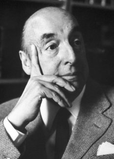

Pablo Neruda was a Nobel Prize-winning Chilean poet who was once called "the greatest poet of the 20th century in any language."
Neruda was born in Parral, Chile, on July 12, 1904. The poet stirred controversy with his affiliation with the Communist Party and his outspoken support of Joseph Stalin, Fulgencio Batista and Fidel Castro. His poetic mastery was never in doubt, and for it he was awarded the Nobel Prize for Literature in 1971. He died on September 23, 1973, with subsequent investigations exploring whether he might have been poisoned.
 To Index